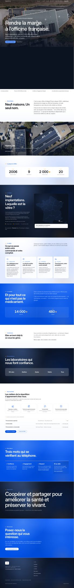
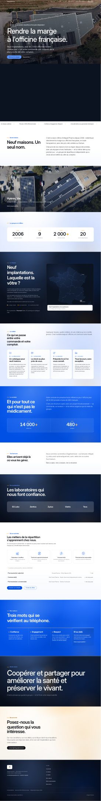

Ce qui est en ligne
Le site que tu viens de valider, sans retouche. Il sert de repère.
Ouvrir
Une touche
Le seul geste qu'on retient vraiment de la cinématique : la page finit sur un lever de jour chaud au lieu d'un aplat bleu, et les sections de nuit gagnent de la profondeur. Le reste est identique.
Ouvrir
Le fil de lumière
La touche, plus une lumière qui vient toujours du même côté d'un bout à l'autre de la page — comme un soleil qui la traverse — et des passages fondus entre les chapitres au lieu de coupes nettes.
OuvrirLes plans
Le fil de lumière, plus une ouverture qui tient l'écran entier, la photo du siège traitée comme un plan de cinéma, et les titres de chapitre d'un cran au-dessus.
Ouvrir
La nuit
Même structure, autre heure : les sombres dominent, les claires deviennent un papier chaud plutôt qu'un blanc clinique, et le bleu est réservé à l'action. L'alternance reste stricte.
Ouvrir